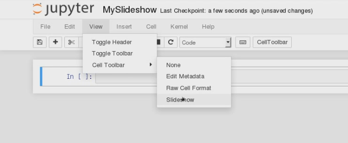
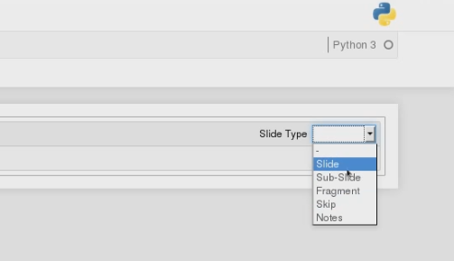
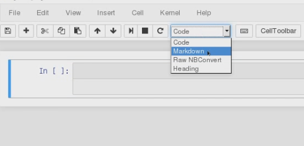

Introduction
Slides are integral part of engaging presentations. Here we learn how to create slides in jupyter that can be run in your browser.
Steps
-
In a jupyter file first choose slideshow from view menu
view > slideshowas follows
-
It will add few choices in each cell as follows

The choices are
- Slide: Will create a new slide from the cell. Each new slide appear horizontally.
- Sub-slide: This will also create new slide but it will transition vertically.
- Fragment: A part of slide appear in each forward.
- Skip: This will not added in slideshow.
- Notes:
-
Change the cell setting to
makrdown. Write the content in markdown.
Viewing the slides
The slide is a webpage like others you see often on internet. It uses a javascript library raveal.js. To view the file locally we have to download the reveal.js library in the same folder. We can use git to download.
git clone https://github.com/hakimel/reveal.js.git
Now to view the file in your browser enter the following in the commandline.
jupyter-nbconvert slides.ipynb \
--reveal-prefix=reveal.js --to slides --post serve
It will open a new tab in your browser with slides are open. Use arrow keys to navigate.
Customization
Revial.js comes with some default themes and transitions. To apply a theme say sheif and transition cube just add ?theme=sherif&transition=cube in the end of presentation url.
More advanced Customization is possible through writing your own styple files.
Default themes
The framework comes with a few different themes included:
- black: Black background, white text, blue links (default theme)
- white: White background, black text, blue links
- league: Gray background, white text, blue links (default theme - for reveal.js < 3.0.0)
- beige: Beige background, dark text, brown links
- sky: Blue background, thin dark text, blue links
- night: Black background, thick white text, orange links
- serif: Cappuccino background, gray text, brown links
- simple: White background, black text, blue links
- solarized: Cream-colored background, dark green text, blue links